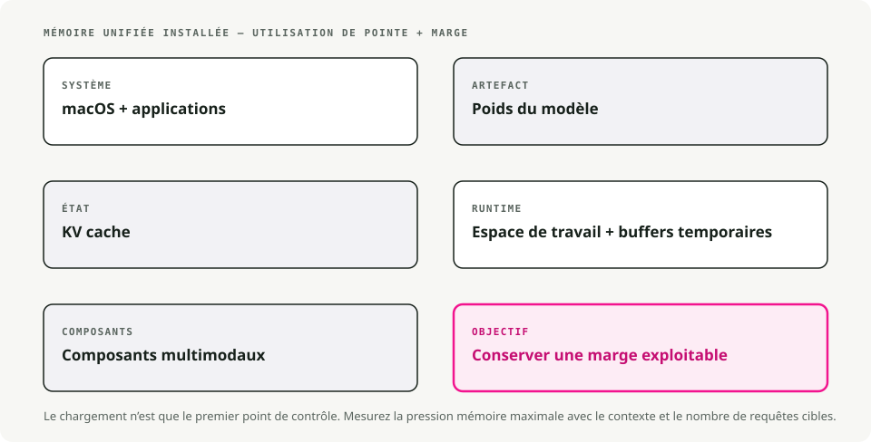
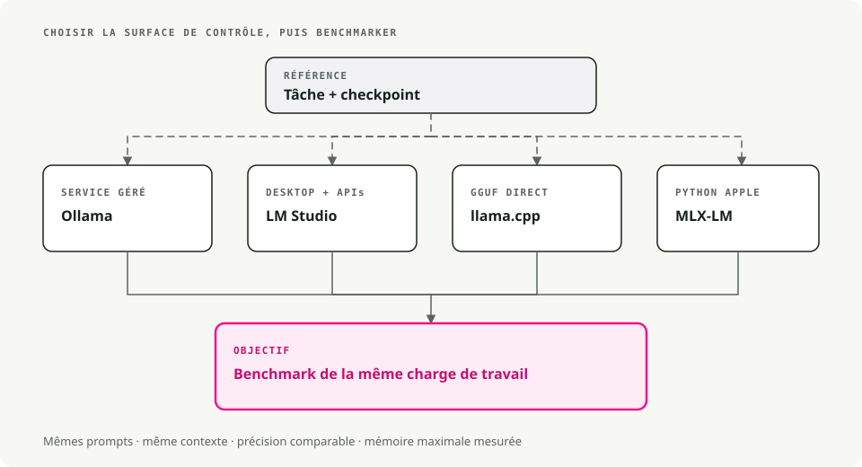

Traduction automatique
Cet article a été traduit automatiquement depuis la version originale en anglais.
LLM locaux sur macOS : Ollama, LM Studio, llama.cpp, MLX et Apple Silicon
Envoyer chaque prompt à une API tierce finit par lasser, surtout quand la moitié des prompts sont « réécris ce paragraphe » ou « quel est le schéma JSON pour ça ». Les LLM locaux ont réglé ça pour moi sur Apple Silicon plus vite que prévu. Un modèle 7B en quantification 4 bits tourne confortablement sur un MacBook 16 Go, et l’aller-retour s’arrête au clavier.
La vraie question ouverte, c’est donc avec quelle application le piloter. Ollama, LM Studio, llama.cpp, MLX et quelques autres s’appuient tous sur des moteurs d’inférence similaires et les mêmes fichiers GGUF. La différence tient au niveau de friction entre vous et le modèle : d’un côté, double-clic puis on tape ; de l’autre, compilation depuis les sources puis lecture de la page de manuel.
Concepts clés des LLM locaux sur macOS
- Inférence : exécuter le modèle pour générer du texte.
- Quantification (GGUF) : une technique pour réduire la taille du modèle avec une perte de qualité minimale. Vous verrez des noms de fichiers comme
llama-3-8b-Q4_K_M.gguf. La partieQ4signifie une quantification 4 bits, qui utilise beaucoup moins de RAM que les poids complets en 16 bits. - Apple Silicon (Metal) : les puces Apple série M partagent la RAM entre CPU et GPU (Apple appelle cela la « mémoire unifiée »). C’est pourquoi un MacBook avec 32 Go ou 64 Go peut charger des modèles qui nécessiteraient un GPU dédié coûteux sur un PC.
Prérequis
- Matériel : un Mac avec Apple Silicon (M1 à M4) est ce qu’il vous faut. Les Mac Intel fonctionnent, mais ils sont nettement plus lents.
- RAM :
- 8 Go : suffisant pour les petits modèles (Mistral 7B, Llama 3 8B).
- 16 Go+ : confortable pour les modèles plus gros et le multitâche.
- Espace disque : les modèles sont volumineux. Prévoyez environ 10 à 20 Go pour une bibliothèque de départ utile.

1. Ollama - L’option « ça marche, point »
Téléchargement : ollama.com
Voyez Ollama comme le « Docker des LLM ». Il encapsule le moteur llama.cpp dans un paquet natif macOS, télécharge les modèles à la demande et route automatiquement le travail vers Metal. Vous l’installez, vous lancez une commande, et vous discutez. C’est le chemin le plus simple si vous voulez juste un LLM fonctionnel et un endpoint HTTP vers lequel pointer votre code.
Exemple de workflow
# 1. Download and run Llama 3 (it auto-downloads if needed)
ollama run llama3
# 2. Use it in your code via the local API
curl http://localhost:11434/api/generate -d '{
"model": "llama3",
"prompt": "Explain quantum computing to a 5-year-old",
"stream": false
}'
Avantages / inconvénients
| ✅ Avantages | ❌ Inconvénients |
|---|---|
Configuration la plus simple (glisser-déposer .dmg) |
Application principale closed source |
CLI propre (ollama list, ollama pull) |
Contrôle moins fin des paramètres de génération |
| Grande bibliothèque de modèles préconfigurés |
2. LM Studio - L’explorateur visuel
Téléchargement : lmstudio.ai
LM Studio est l’option orientée GUI. Il propose un navigateur de type App Store pour rechercher directement sur HuggingFace, prend en charge le format MLX d’Apple en plus de GGUF (ce qui peut être plus rapide sur certains Mac), et expose un serveur local compatible OpenAI. Donc le code client existant qui parle déjà à OpenAI fonctionne en grande partie tel quel.
Exemple de workflow
Vous pouvez utiliser le SDK Python officiel, ou n’importe quel client compatible OpenAI pointé vers le serveur local :
# Using the official LM Studio SDK
from lmstudio import LMStudio
client = LMStudio()
response = client.complete(
model="llama-3-8b",
prompt="Write a haiku about debugging."
)
print(response.content)
Avantages / inconvénients
| ✅ Avantages | ❌ Inconvénients |
|---|---|
| Interface soignée et facile à utiliser | GUI closed source |
| Prise en charge native des modèles GGUF et MLX | Téléchargement plus lourd (~750MB) |
| RAG intégré (discussion avec vos PDF) |
3. llama.cpp - L’outil des power users
Repo : github.com/ggml-org/llama.cpp
C’est le moteur qu’encapsulent presque tous les autres outils. Si vous voulez les meilleures performances, les dernières fonctionnalités dès leur sortie, ou intégrer un LLM dans votre propre application C++, c’est la source à regarder. C’est bare-metal et léger, mais en contrepartie vous gérez tout vous-même : téléchargements, formats et dizaines d’options CLI.
Exemple de workflow
# 1. Install via Homebrew
brew install llama.cpp
# 2. Download a model manually (e.g., from HuggingFace)
huggingface-cli download TheBloke/Llama-3-8B-Instruct-GGUF --local-dir .
# 3. Run inference with full control
llama-cli -m llama-3-8b-instruct.Q4_K_M.gguf \
-p "Write a python script to sort a list" \
-n 512 \
--temp 0.7 \
--ctx-size 4096
Avantages / inconvénients
| ✅ Avantages | ❌ Inconvénients |
|---|---|
| Contrôle total sur chaque paramètre | Courbe d’apprentissage raide (CLI uniquement) |
| Licence MIT (open source) | Gestion manuelle des modèles |
| Très léger (<30MB) |
4. GPT4All - Privacy-first & RAG
Téléchargement : gpt4all.io
GPT4All repose sur deux idées : la confidentialité et les documents. Sa fonctionnalité phare, LocalDocs, permet de pointer l’application vers un dossier de PDF, de notes ou de code et de dialoguer directement avec leur contenu. Tout tourne hors ligne, sans télémétrie. C’est la façon la plus simple d’obtenir une configuration RAG fonctionnelle sur votre machine sans écrire de code.
Avantages / inconvénients
| ✅ Avantages | ❌ Inconvénients |
|---|---|
| Le RAG LocalDocs fonctionne bien prêt à l’emploi | GUI uniquement (pas de mode headless) |
| Entièrement hors ligne et privé | Utilisation de ressources plus lourde qu’Ollama |
| Multi-plateforme (Mac, Windows, Linux) |
5. KoboldCPP - Pour les auteurs
Repo : github.com/LostRuins/koboldcpp
Un fork de llama.cpp orienté écriture créative et RPG de table. Il s’exécute comme une application web locale avec des outils pour la génération longue : « World Info », mémoire des personnages et divers hacks de cohérence narrative pour essayer de garder le modèle sur les rails sur des milliers de tokens. Le public visé, ce sont les auteurs et les personnes qui animent des RPG textuels ; si vous voulez surtout du chat ou du code, l’interface standard semblera étriquée.
Exemple de workflow
# 1. Download the single binary
wget https://github.com/LostRuins/koboldcpp/releases/latest/download/koboldcpp-mac.zip
# 2. Run it (launches a web server)
./koboldcpp --model llama-3-8b.gguf --port 5001 --smartcontext
Avantages / inconvénients
| ✅ Avantages | ❌ Inconvénients |
|---|---|
| Bons outils pour l’écriture créative | UI de niche (peu adaptée au code/chat) |
| Exécutable en fichier unique (sans installation) | Licence AGPL (restrictive pour un usage commercial) |
Mention honorable : MLX-LM
Si vous êtes développeur Python sur Apple Silicon, regardez MLX-LM d’Apple. C’est un framework optimisé pour les puces série M, et sur le bon matériel c’est souvent la façon la plus rapide d’exécuter un modèle en local. Le compromis, c’est qu’il est moins guidé qu’Ollama : plus de Python, moins de garde-fous.
Résumé : quel outil est fait pour vous ?
Un arbre de décision rapide :

Tableau comparatif rapide
| Outil | Interface | Difficulté | Meilleure fonctionnalité |
|---|---|---|---|
| Ollama | CLI / barre de menu | ⭐ (Facile) | Expérience « ça marche, point » |
| LM Studio | GUI | ⭐ (Facile) | Découverte de modèles & UI |
| GPT4All | GUI | ⭐ (Facile) | Chat avec des documents locaux (RAG) |
| KoboldCPP | Web UI | ⭐⭐ (Moyen) | Outils d’écriture créative |
| llama.cpp | CLI | ⭐⭐⭐ (Difficile) | Performances brutes & contrôle |
Que choisir, concrètement
- Commencez avec Ollama si vous voulez juste quelque chose qui tourne aujourd’hui.
- Choisissez LM Studio si vous préférez d’abord parcourir les modèles visuellement.
- Passez à llama.cpp quand vous avez besoin d’un contrôle total sur l’inférence.